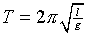
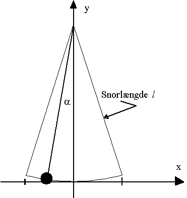
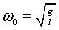
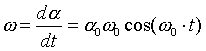
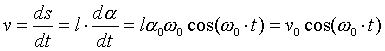
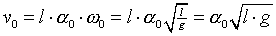
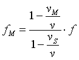

, hvor t er Celsiustemperaturen.
, hvor t er Celsiustemperaturen. Til dette forsøg benyttes en tonegenerator og en højttaler og en pc med lydkort og mikrofon. Desuden benyttes programmet Datalyse.
Anbring tonegenerator og højttalerne på et bord. Indstil f.eks. frekvensen til 440 Hz sinus. Det er vigtigt at starte forsøget med at tænde for tonegeneratoren, da mange tonegeneratorer »driver«.
Skru to skruer i loftet og ophæng mikrofonen, så den kan svinge frem og tilbage vinkelret på højttaleren, bind noget tungt i snoren, så svingningen bliver pæn. Vælg apparat lydkort og vælg lydmåling. Indstil til løbende frekvensmåling og 1024 målinger pr scan. Start målingerne.
Efter hvert scan skrives frekvensen nederst på skærmen.
Beregningerne involverer teori for matematisk pendul og for dopplerforskydning. Her er de relevante formler, se teorien i lærebogen!
Svingningstiden for det matematiske pendul er

, hvor l er snorlængden og g er tyngdeaccelerationen.
Når udsvinget (vinklen a) ikke er er for stor, kan vi betragte bevægelsen som en harmonisk svingning langs x-aksen. Dvs. a = a0 sin(w0t). Hvor

.Vinkelhastigheden er

Desuden er udsvinget x = l·a, så hastigheden i bevægelsen er:

Hastigheden v0 omkring ligevægtsstillingen kan reduceres til:

Når modtageren bevæger sig med hastigheden vM og senderen med hastigheden vS, vil modtageren observere en frekvens fM givet ved:

Lydens hastighed i luft er med god tilnærmelse givet ved
, hvor t er Celsiustemperaturen.
I dette forsøg står senderen stille, så nævneren forsvinder i formlen for frekvensen.
Nu kan du regne på dit forsøg.